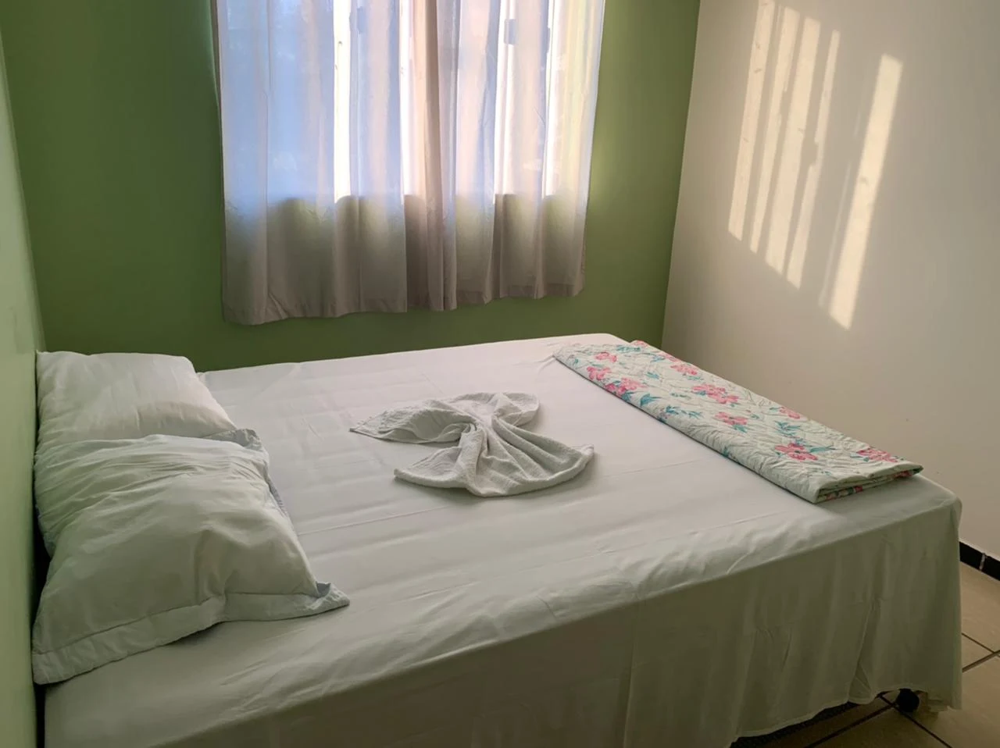
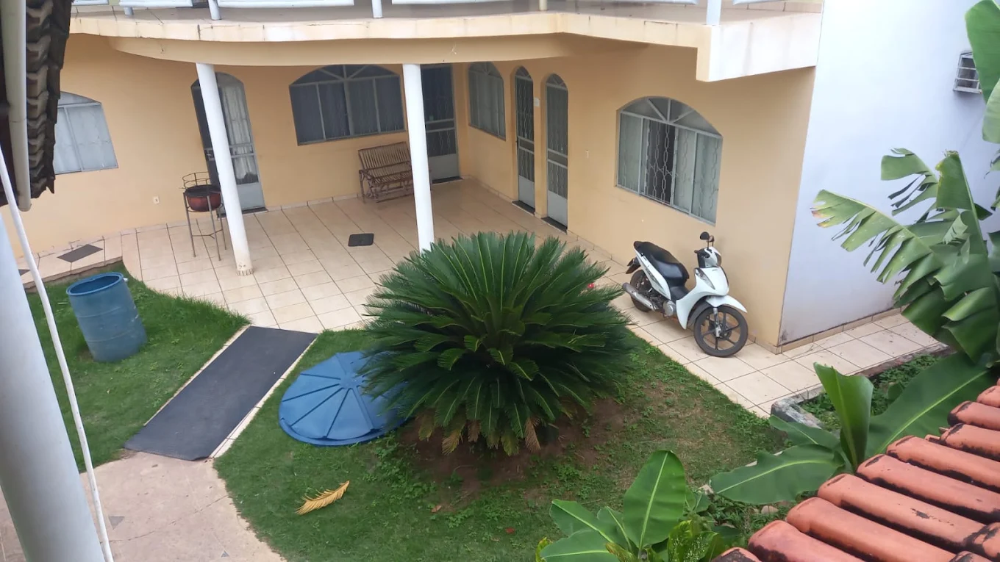
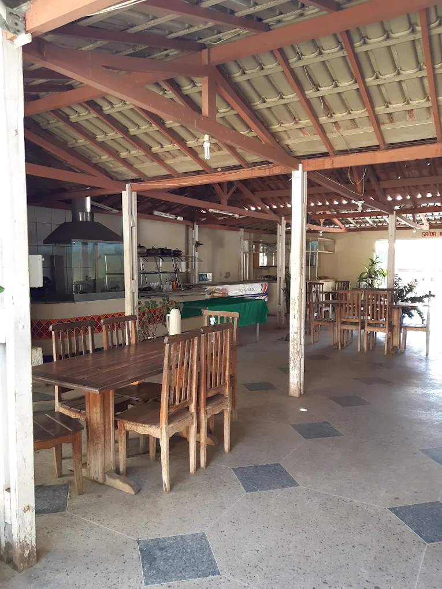
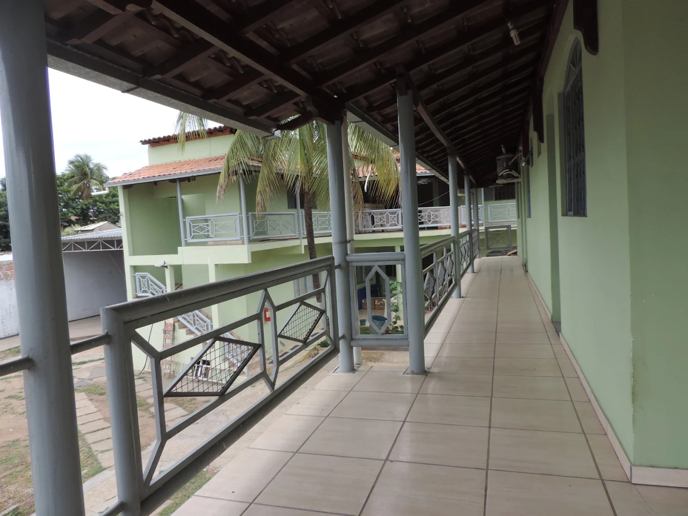

Conteúdo provisório
Card com foto
Base das acomodações. Nome, capacidade e comodidades ficam vazios até a confirmação com o proprietário.
Base visual do site da Hotel Pousada Aquários. Tudo aqui vem de
css/style.css. Esta página é uma referência de trabalho:
não entra no menu, no sitemap nem na indexação.
Extraídas da logo. Os azuis carregam a identidade; o dourado é secundário e nunca domina a tela. Cada contraste abaixo foi verificado em WCAG 2.1.
--aquarios-primary
#1A5FC2 · 6.07:1 com branco · AA
--aquarios-primary-dark
#0A2F63 · 13.1:1 · títulos e rodapé
--aquarios-primary-deep
#071E3F · 16.6:1 · fundos escuros
--aquarios-primary-soft
#E8F0FB · fundo de seção
--aquarios-gold
#F0C419 · preenchimento, nunca texto sobre branco
--aquarios-gold-dark
#C9880A · 3.00:1 · só texto grande e ícones
--aquarios-bg-alt
#F2F6FB
--aquarios-text
#17212E · 16.2:1
--aquarios-text-muted
#5A6675 · 5.85:1 · AA
--aquarios-whatsapp
#0F7A6C · 5.22:1 · AA
O verde de marca #25D366 tem 1.98:1 com branco e
reprova em WCAG tanto para texto quanto para componentes. As
superfícies clicáveis usam #0F7A6C, da própria
paleta do WhatsApp. O verde claro fica só para preenchimento de
ícone sobre fundo escuro.
Figtree variável, servida do próprio domínio. Um arquivo de ~20 KB cobre todos os pesos. A escala é fluida: cresce sozinha entre 320 px e 1400 px, sem breakpoints.
h1 · 800 · clamp(2rem → 3.5rem)
h2 · 800 · clamp(1.625rem → 2.5rem)
h3 · 700 · clamp(1.25rem → 1.625rem)
h4 · 700
Texto de apoio, usado logo abaixo dos títulos de seção.
.aq-lead
Parágrafo padrão. Acentuação conferida: ação, coração, português, Aquários, São Francisco, hóspede, três, você.
body · 1rem / 1.65
Eyebrow, título e lead formam o padrão .aq-section-head.
300 — Light
400 — Regular
600 — Semibold
700 — Bold
800 — Extrabold
Todos com no mínimo 44 px de altura, o alvo de toque confortável exigido na Fase 7.
.btn-aq · .btn-aq-outline · .btn-aq-whatsapp
.btn-aq-lg · padrão · .btn-aq-sm
Um link dentro de um parágrafo herda o azul primário e escurece no hover.
Link discreto — sublinha só no hover.
a · .aq-link · .aq-link-arrow
Navegue com Tab: o anel dourado de 3 px aparece em qualquer elemento focável. Em fundo escuro ele vira branco.
Teste o foco aqui
É aqui que o .btn-aq-gold faz sentido: sobre azul
profundo ou sobre foto, nunca solto no branco.
Um card com foto e um card com ícone cobrem quase tudo que o site precisa. A elevação no hover só é aplicada onde existe mouse.

Base das acomodações. Nome, capacidade e comodidades ficam vazios até a confirmação com o proprietário.
Base das comodidades. O ícone fica em azul sobre o tinte claro, sem competir com as fotos.
Mesma estrutura, com véu escuro na foto — o padrão para quando houver texto por cima da imagem.
A proporção fica no container, não no arquivo. Trocar as fotos provisórias pelas definitivas não vai mexer no layout (roadmap, seção 25).
.aq-media--16x9

.aq-media--4x3

.aq-media--1x1

.aq-media--3x4
--aquarios-space-3xs · 4px
--aquarios-space-sm · 16px
--aquarios-space-md · 24px
--aquarios-space-lg · 40px
--aquarios-shadow-sm
--aquarios-shadow
--aquarios-shadow-lg · radius-lg
.aq-rule
Nenhum dado da pousada — WhatsApp, telefone, endereço, acomodações, preços, políticas — foi confirmado com o proprietário. Os textos desta página são exemplos de composição, não conteúdo do site (roadmap, seção 26).